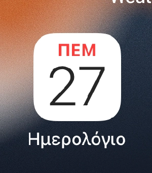
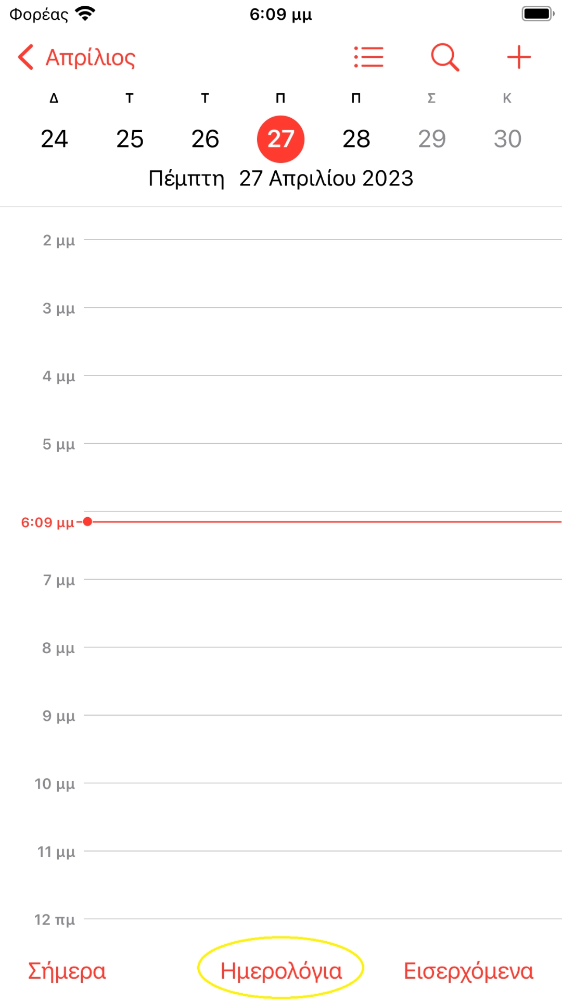
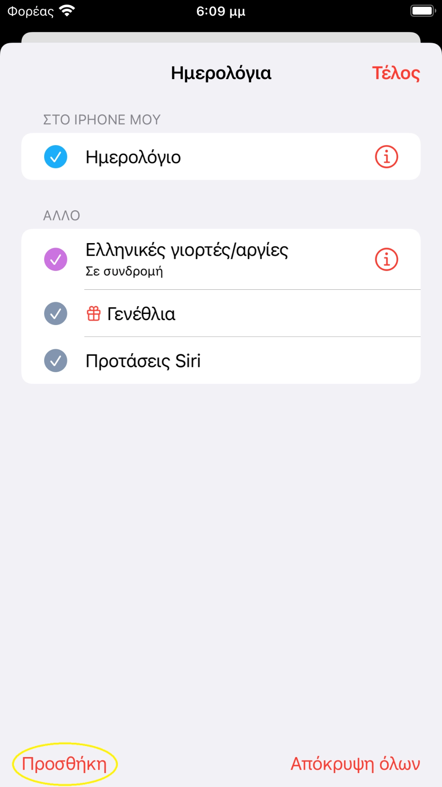
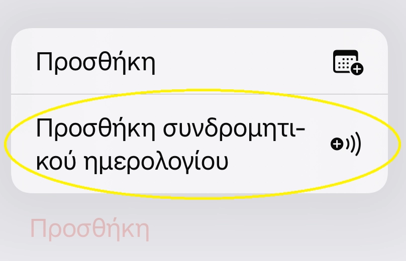
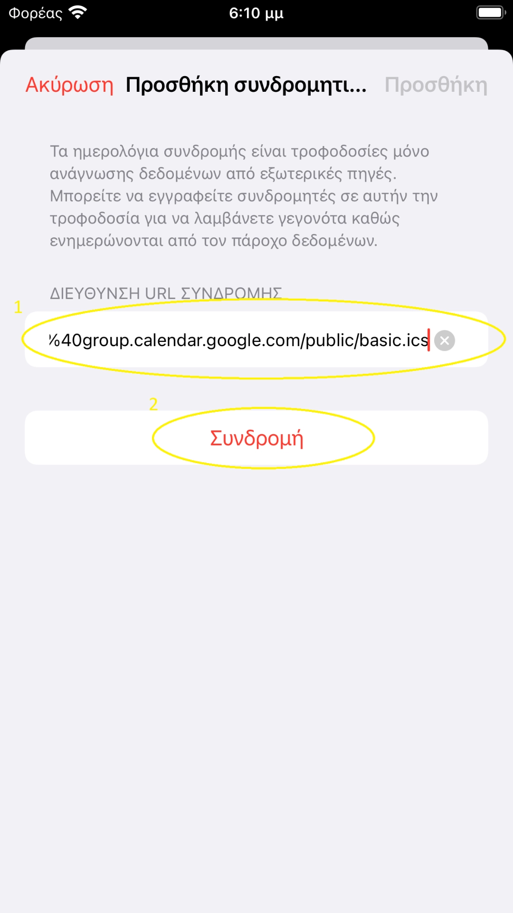
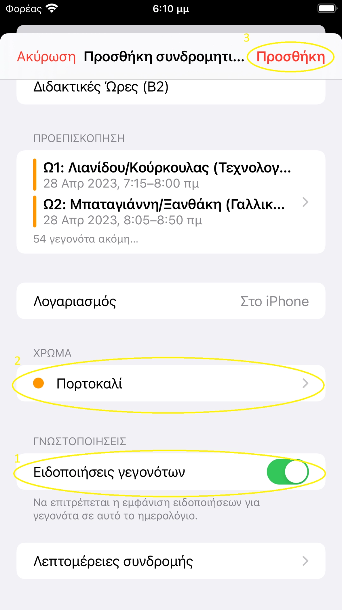
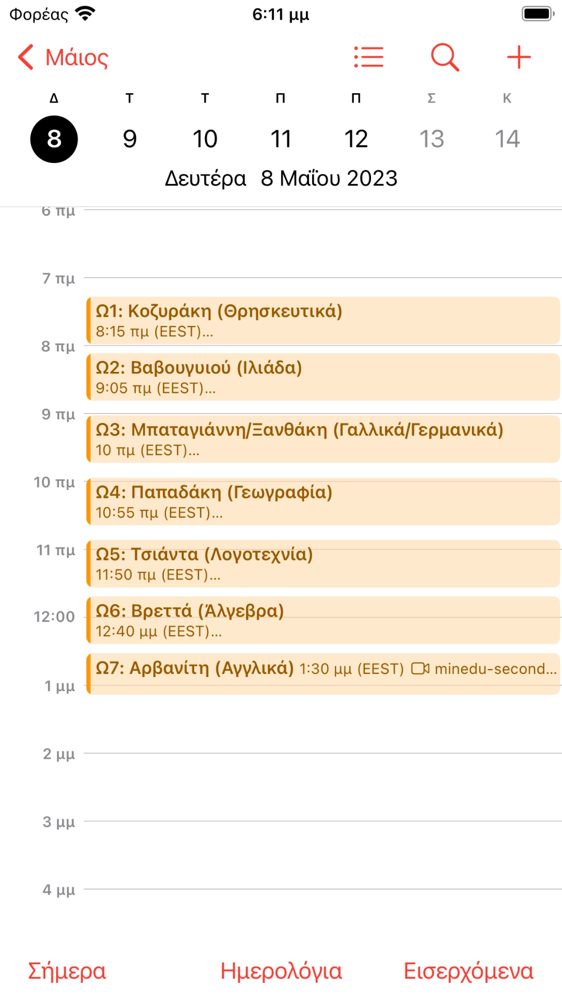

Προσθέστε το πρόγραμμα μαθημάτων στην εφαρμογή Ημερολόγιο, σε 6 βήματα.
Ανοίξτε την εφαρμογή Ημερολόγιο.

Πατήστε πάνω σε μια εικόνα για μεγέθυνση.
Πατήστε το κουμπί Ημερολόγια, κάτω-κέντρο της οθόνης.

Στο μενού «Ημερολόγια», πατήστε Προσθήκη, κάτω-αριστερά.

Απο τα δύο κουμπιά που εμφανίζονται, πατήστε το δεύτερο: «Προσθήκη συνδρομητικού ημερολογίου».
Το ημερολόγιο είναι δωρεάν, χωρίς καμία συνδρομή επί πληρωμή.

Στο κουτί κάτω από «Διεύθυνση URL συνδρομής», εισάγετε τον σύνδεσμο του τμήματός σας — πατήστε το κουμπί για να τον αντιγράψετε, μετά επικολλήστε τον. Στη συνέχεια πατήστε Συνδρομή.

Στο επόμενο μενού, πριν πατήσετε «Προσθήκη», πηγαίνετε λίγο πιο κάτω:
1. Απενεργοποιήστε τις «Ειδοποιήσεις γεγονότων», ώστε να μην λαμβάνετε 6-7 ειδοποιήσεις την ημέρα.
2. Αλλάξτε το χρώμα εμφάνισης στο πεδίο «Χρώμα».
3. Αλλάξτε το όνομα του ημερολογίου σε ό,τι επιθυμείτε.
Μόλις τελειώσετε, πατήστε Προσθήκη πάνω-δεξιά.

Το ημερολόγιό σας θα φαίνεται τώρα κάπως έτσι:

Συγχαρητήρια — προσθέσατε το πρόγραμμα στο Ημερολόγιο! Αν δεν φαίνεται έτσι, κάτι πήγε λάθος· επικοινωνήστε μαζί μου.